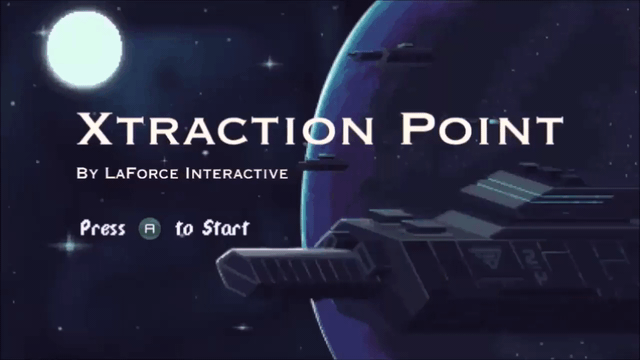

Xtraction Point

ABOUT
Xtraction Point is a 2D game in which two players have to collaborate together to fight against enemies
and solve puzzles to escape from a spaceship occupied by space pirates.
A long term project completed over 2 months by 3 friends and me.
DEVELOPMENT INFO
-
Developed by Lapforce Interactive.
-
2 month development cycle
-
4 developers
-
Made using Unity Engine
CONTRIBUTIONS
-
Programmer, Designer, VFX engineer
CONTRIBUTIONS
Since this game is developed by a small team of 4 people, everyone worked on extensive types of stuff.
For me, I worked on the game mechanic design, player controller, player's shield VFX, lots of level design and implementation,
boss behaviour system design and implementation, boss level design and implementation, laser VFX.
 My initial proposal is to build a 4-player top down tactical shooter game where players are special forces using
different gadgets to coolaborate to breach/sneak into enemy spaceship, and player's movement should be less
dynamic. One scenario is that while one player was solving puzzle to open a door,
other players have to cover that player from surrounding enemies. Another scenario is that when players try to push through
a corridor with tons of enemies, one player has to wield shield as cover for other players while other players shooting back
at enemies, like a SWAT team. However, after discussion, we thought that the theme of special forces may limit how
wild the level tricks can go. Also, it seems like only me like special forces, other team members especially the artist
want something more fantasy.(To be honest, I believed this is the real reason, but anyway, dont make artist unhappy,
especially when your team only has one.)
My initial proposal is to build a 4-player top down tactical shooter game where players are special forces using
different gadgets to coolaborate to breach/sneak into enemy spaceship, and player's movement should be less
dynamic. One scenario is that while one player was solving puzzle to open a door,
other players have to cover that player from surrounding enemies. Another scenario is that when players try to push through
a corridor with tons of enemies, one player has to wield shield as cover for other players while other players shooting back
at enemies, like a SWAT team. However, after discussion, we thought that the theme of special forces may limit how
wild the level tricks can go. Also, it seems like only me like special forces, other team members especially the artist
want something more fantasy.(To be honest, I believed this is the real reason, but anyway, dont make artist unhappy,
especially when your team only has one.)
 The concept of our level design revolves around two things, collaboration and players' shield.
Starting from this concept, many idea poped up very quickly, like players cover each other's back
while waling through a corridor with lines of turrets on both side, or using shield to bounce bullets
to open doors.
The concept of our level design revolves around two things, collaboration and players' shield.
Starting from this concept, many idea poped up very quickly, like players cover each other's back
while waling through a corridor with lines of turrets on both side, or using shield to bounce bullets
to open doors.
While I was designing the boss level, one thing worth thinking about was how should player damage the boss.
Since players only have shield, stun ability and a long-cooldown damage ability,
we need extra damage source for players to utilize. TO solve this, I was largely inspired by Metal Slug.
Metal Slug has lots of epic boss fight design, in one of them,
the level provide a fixed machine gun for players' usage, and this is what our boss level design make use of.